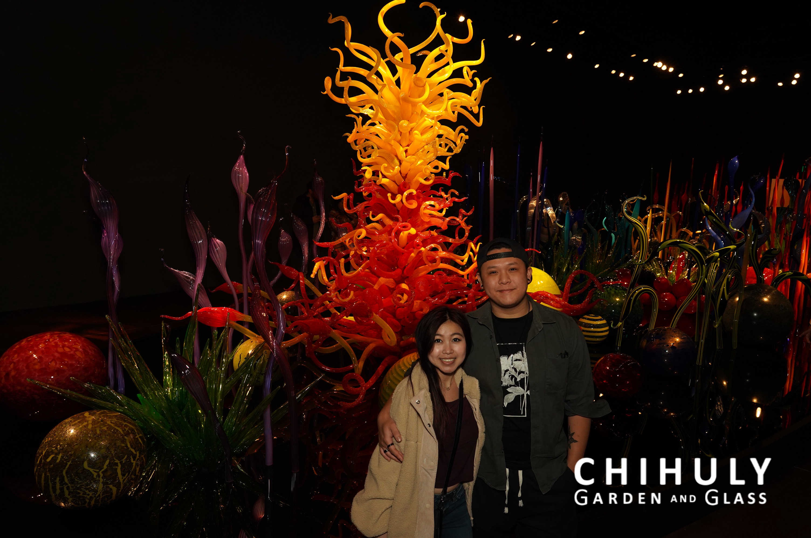

The "Seaforms" series, inspired by the shapes and movement of ocean life, is one of Chihuly’s most famous works. These sculptures evoke the fluidity of underwater creatures with their thin, delicate forms, intricate ridges, and vibrant colors. Each piece appears almost weightless and organic, capturing the essence of marine life in glass.
Chihuly’s massive chandeliers have become a signature element of his installations. These monumental works are composed of hundreds of glass pieces suspended from the ceiling, often in vivid and striking colors. Each chandelier is unique in form and scale, ranging from swirling abstract shapes to more traditional, elegant designs.
The "Persians" are among Chihuly's most intricate works, featuring swirling, curvilinear forms with bold colors and designs. These pieces often appear in large installations, either hanging from the ceiling or spread across surfaces. The Persian series is known for its vibrant colors and delicate details, adding depth and texture to his body of work. This piece is his creation located at the De Young Mueseum in San Francisco and was photographed in 2012.
The "Macchia" series, which means "stain" in Italian, is one of Chihuly's most colorful collections. These large, bowl-shaped forms are distinguished by their vibrant color combinations and contrasting lip wraps. Chihuly's exploration of color in this series led to the development of new techniques for combining pigments in his glass sculptures. Taken in 2016 and had closed in 2017, this piece is roughly priced at 5,000$ USD in Ontario located at the ROM (Royal Ontario Museum).
Chihuly's installations often transform spaces into immersive experiences. Notable works include the "Glass Forest," with glass branches that seem to grow from the ground, and "The Sun," a radiant ball of glowing glass. These installations can be found in museums, gardens, and public spaces across the globe.
Located in Seattle, Washington. (My girlfriend and me!)
